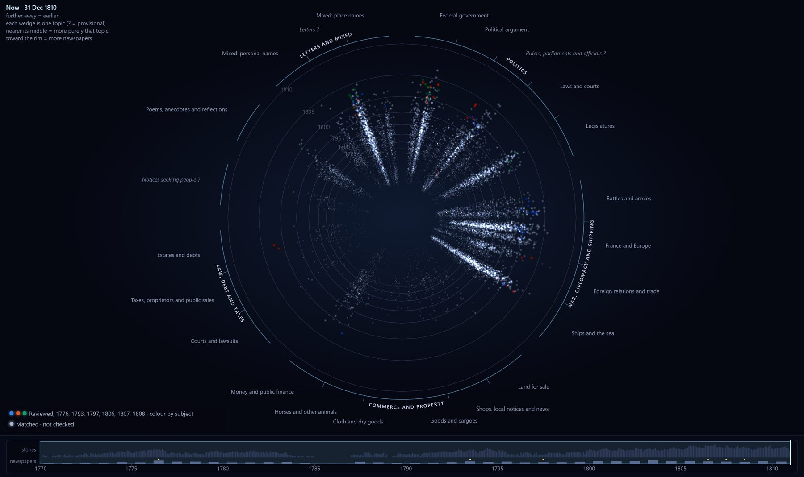
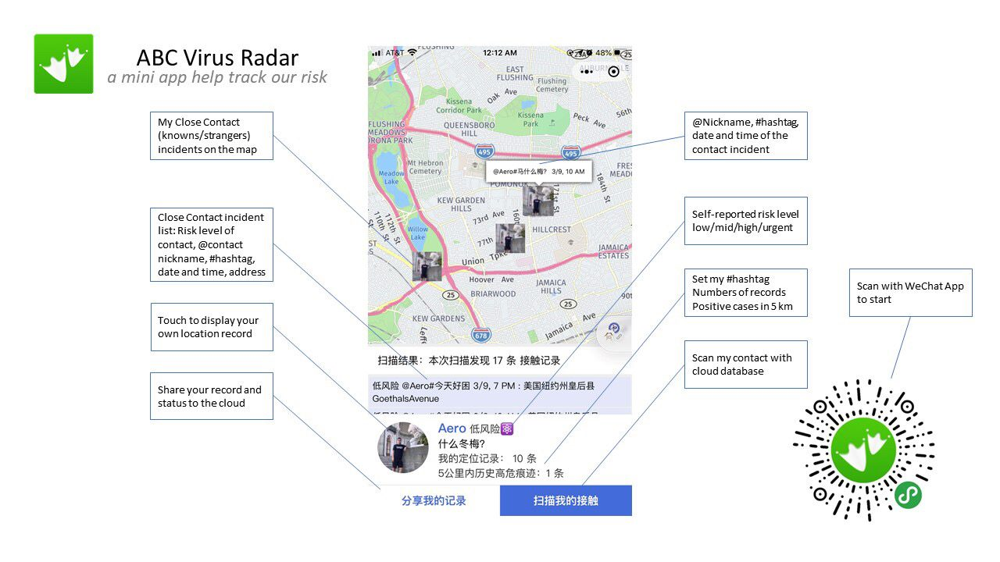

I make data you can play, read and walk through: games, installations and public archives that start from a real problem.
Designer in New York · MS Data Visualization, Parsons School of Design
Lost in Subway, 2024–
Public research on finding the Brooklyn-bound J/Z platform at Fulton Street: a web game, a story kiosk shown twice, a paper, and a phone-made 3D model of the station.

Newspaper Night Sky, 2026
How news moved through American newspapers, 1770–1810: 48,296 reprinted stories as a night sky.

Owney — A Life in Tags, 2026
A time cube of the tags given to Owney, the Railway Mail Service dog, from the Smithsonian National Postal Museum.

ABC Virus Radar, 2020
A COVID-19 contact-warning app, designed and built in the first weeks of the pandemic and released on WeChat on February 8, 2020.